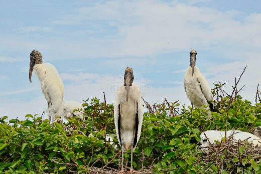

Bright red male cardinal
Recognizable by its vibrant red plumage and distinctive crest on its head, cardinals stand out in leafy green backgrounds.
Explore on Picfair ↗Original photography & artwork · KK Florida
Discover Florida birds through original wildlife photography. Explore great egrets, herons, ibis, spoonbills, cardinals and other birds found in South Florida wetlands, parks and neighborhoods.
← All collectionsBrowse the collection
14 images · Choose an image to see it larger, or use a shopping link to explore available products.
Recognizable by its vibrant red plumage and distinctive crest on its head, cardinals stand out in leafy green backgrounds.
Explore on Picfair ↗
A bright red male cardinal perched proudly in the tree, its cheerful song filling the sunny morning with joyful melodies. What a happy sight!
Explore on Picfair ↗
A portrait of a crow often highlights its sharp, observant eyes and strong, curved beak—features that reflect its keen intelligence and adaptability.
Explore on Picfair ↗
Sunlight captures the beauty of a Eurasian collared dove as he takes flight.
Explore on Picfair ↗
A graceful great egret stands tall among blooming waterlilies in the serene Florida Everglades, basking in gentle sunlight.
Explore on Picfair ↗
A graceful great egret stands tall in the Florida Everglades, its white feathers shimmering gently among the lush green grass.
Explore on Picfair ↗
The great egret is a striking bird often seen wading gracefully through the shallow waters of the Florida Everglades. Known for its long legs, slender neck, and brilliant white feathers, this elegant bird is a symbol of wetland health and beauty.
Explore on Picfair ↗
These birds often stand still near water, waiting patiently to catch fish, their favorite food. The peaceful moment of a great egret at sunset captures both the grace of this magnificent bird and the serene beauty of nature’s evening light.
Explore on Picfair ↗
Great blue heron perched on weathered driftwood in shallow wetland water, surrounded by marsh grass and moss-covered rocks.
Explore on Picfair ↗

Watching a Bluejay on a branch can be a delightful sight, as it often displays curious behavior—like mimicking calls of other birds or flitting energetically from one perch to another.
Explore on Picfair ↗

The brown thrasher is a striking bird native to eastern and central North America, easily recognized by its warm reddish-brown back, bright yellow eyes, and bold streaked chest.
Explore on Picfair ↗
Three wood storks stand alert on green shrubs at a nesting colony, with another bird resting in a nest beneath a pale blue sky.
Explore on Picfair ↗Photography, artwork & gifts
Explore original KK Florida designs and photography available on Picfair.